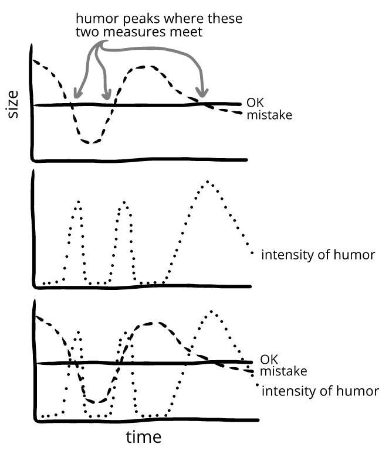
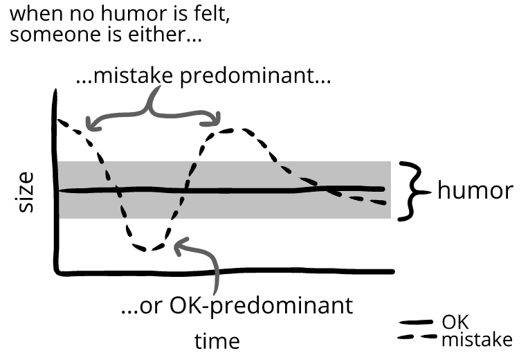
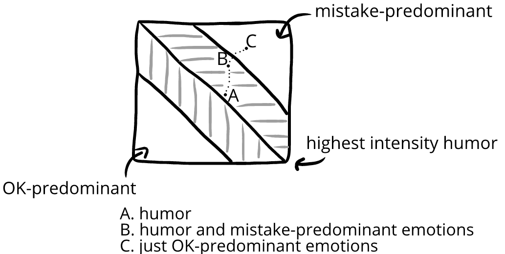

Last chapter, we saw that we evaluate mistakes and OKs as having a size. In this chapter, we’ll look more at how these sizes change over time.
As our evaluations change, the intensity of humor changes:
Trevor and Yasmin are playing a board game. Yasmin is about to win until she has a catastrophically bad turn.
Trevor:*shouting*“My halfling runs you down. I win!”
Tears run down their face as they howl with laughter.(←high-intensity humor)
Then they settle into giggles. (←medium-intensity humor)
Finally, they just feel tired.(←low-intensity humor)
The intensity of Trevor and Yasmin’s humor changes because their evaluations change.
We can look at more examples of evaluations changing over time:
A.Hana and Alina stare at the broken instrument.(←medium mistake)
B.Hana asks how much it costs. She hopes it was under $1,000.“About $12,000,”Alina says. Hana is shocked.(←large mistake)
C.After giving it some thought, Hana is no longer shocked by the price. Still—she can’t believe it just… cracked like that!(←medium mistake)
A.Damien loses track of his wallet, which is annoying.(←medium OK)
B.He thinks about all the stuff he keeps in it—including his debit card!(←small OK)
C.Worst of all, he keeps his pin written on a piece of paper in his wallet. Shit.(←even smaller OK)
Since we evaluate mistakes and OKs continuously, we can graph their change over time:
We can put mistakes and OKs on the same graph:
Then Owen leans over and tells Emma a joke.
She laughs.
Then she doesn't.
This lets us graph the intensity of humor too. The intensity of humor increases the closer the mistake and OK are to touching (balancing)—and decreases the further away they get. This is why the intensity of humor tends to increase, peak, and then decrease:
Owen leans over and tells Emma a joke.
She laughs.
Then she doesn't.(←Emma’s humor increases and then decreases in intensity)
We’ll talk about this throughout this chapter.
Evaluations change continuously
We can see evaluations change over a few seconds, like when Owen tells Emma a joke. But we can also look at evaluations change over a period of months or years:
Middle school Zoe has a huge crush on Ryan from the boy’s track team. She keeps trying to start a text conversation with him, until he finally gets annoyed.“Stop texting me,”he writes her.(←Zoe feels this is an enormous mistake)
Zoe’s grin fades and she puts down her phone and curls over her legs from shame.(←Zoe feels this is a tiny OK)
We can arbitrarily assign numbers to Zoe’s mistakes and OKs to think about how Zoe’s evaluations change over time:
A.Middle school Zoe is devastated by the rejection.(←Zoe feels this is a mistake of 10 with an OK of 1)
B.Two months later, Zoe still wants her parents to move to another country.(←mistake 10, OK 2)
C.Two month later, Zoe still wants to transfer schools.(←mistake 10, OK 3)
D.Two months later, Zoe still wants to drop out of track.(←mistake 10, OK 4)
E. Two months later, Zoe still wonders how she could have been so stupid.(←mistake 9, OK 5)
F. Two months later, the text conversation crosses Zoe’s mind. It wasn’t such a big deal after all, was it? She gives a loud laugh, suddenly feeling cleansed.(←mistake 5, OK 5↔︎humor)
At this point, the humor peaks, since the size of the mistakes and OKs match. But we don't have to stop at the peak of intensity—we can keep thinking about Zoe’s evaluations for as long as we think would be useful:
G.Two months later, if Zoe thinks of it, she smiles.(←mistake 4, OK 6)
H.Two months later, if for some reason it crosses her mind, it amuses her.(←mistake 4, OK 7)
I.Two months later, Zoe is reading an article online about making sense of bad feelings, and she makes another realization. (← mistake 2, OK 10)
Zoe smiles at the realization—but the event itself is now outside the bounds of humor and completely in the past. If she thinks of it again, she feels something other than humor.
If we only track the intensity of humor, the humor can seem to come from nowhere and then vanish. But when we instead focus on mistakes and OKs, we can see humor as emerging and disappearing predictably from two continuous and interacting measures.
Visualizing humor
Humor is felt most intensely when the size of the mistake and OK are balanced. This lets us see humor grow in intensity, peak, and then decline in intensity:

These graphs let us see at a glance when humor is felt, and how intensely. Someone feels humor whenever the lines for mistake and OK are close to each other.
What do people feel when not feeling humor?
When the size of mistakes and OKs are close to balanced, we feel humor. When they're not balanced, we don't feel humor.
But there are two ways these scales can not be balanced. The scales can either be mistake-predominant(mistake is larger than the OK) or OK-predominant(OK is larger than the mistake):
Above, someone starts with mistake-predominant evaluations, moves into humor, and then moves into OK-predominant evaluations.
This lets us describe different parts of the emotional situation over time—not just when there is humor, but also when there's not humor:

Emotions are either OK-predominant or mistake-predominant
Our evaluations have three emotional configurations—three emotional zones
There is a mistake-predominant zone, where the mistake is larger than the OK. There's also the OK-predominant zone, where the OK is larger than the mistake.
These zones are separated by when these two evaluations are balanced: the balanced zone—humor:
The line of highest-intensity humor is like a watershed line: on either side of it, the humor starts to change one of two ways—into either OK-predominant emotions or mistake-predominant emotions.
Humor into mistake-predominance
While the mistake and OK balance, we feel intense humor. But if the mistake grows or the OK shrinks, we head toward the mistake-predominant zone:
As we head into the mistake-predominant zone, our emotional state contains less humor and more and more mistake-predominant emotions, like afraid, ashamed, bummed, confused, excited, irritated, focused, grieving, perplexed, jealous, sad, stressed, terrified, worried, and so on.
Eventually, there’s no humor, and we’re left with only mistake-predominant emotions.
Emma drops her toast.
A.It lands jelly-down on the table. Bad luck! Emma laughs.(←humor)
B.Smiling, and a bit annoyed, she gets some napkins to wipe up the spill.(←humor and mistake-predominant emotions)
C.She eats the toast with a vague feeling of irritation.(←mistake-predominant emotions)

Humor into OK-predominance
The opposite happens if we tilt toward the OK-predominant zone. At first, we feel intense humor. But if the mistake shrinks or the OK grows, we move further into the OK-predominant zone.
As we head into the OK-predominant zone, our emotional state contains less humor and more and more OK-predominant emotions like apathetic, bored, calm, certain, content, convinced, detached, leisurely, listless, neutral, relaxed, stagnant, satisfied, tranquil, unexcited, and so on.
Eventually, the mistakes and OK are so far apart that our humor is gone, and we’re left with only an OK-predominant emotion:
Emma drops her toast.
A.It lands on the table with the jelly facing up. Luck! Emma smiles.(←humor)
B.She puts it back on her plate, smiling.(←humor and OK-predominant emotions)
C.She eats it slowly, not really thinking about anything.(←OK-predominant emotion)
Emotions fall within these three zones
Throughout this book, we’ll talk about emotions as being somewhere in relation to these three zones:
Mistake-predominant emotions(afraid, ashamed, bummed, confused, excited, irritated, focused, grieving, jealous, perplexed, sad, stressed, terror, worried,
and so on)
Balanced emotions(humor)
OK-predominant emotions(apathetic, bored, calm, certain, content, convinced, detached, leisurely, listless, neutral, relaxed, stagnant, satisfied, tranquil, unexcited, and so on)
This helps us see humor as part of the same emotional landscape as other emotions. Humor isn’t apart from other emotions—instead, it has a specific place: humor is sandwiched between emotions like anger and calm.
When we cross between these two emotional zones, humor “rings”—like how a convenience store bell rings whenever the door is opened, whether someone is going in or out.
In this way, humor rings on the way to terror, the same way humor rings on our way to apathy:
If we’re in a convenience store, we can ring the bell by opening the door—but then not go through the door. We can do the same with humor, where humor rings, but we don’t change which zone we’re in:
We can also open and close the convenience store door repeatedly to keep dinging the bell. We can do something similar for humor too:
We’ll be using this way of thinking about our emotions (three emotional zones) throughout this book—which will let us keep our thinking organized when interpreting humor.
That's it for this chapter!
A deeper look (Humor dynamics)
We can think of this book as being about humor dynamics—that is, thinking about how humor evolves in people over time, and how that affects people.
The goal of humor dynamics is to move beyond seeing humor as "on" or "off"—and move into seeing humor as something that flows and integrates into broader systems.
This is a bit like moving from arithmetic to algebra—or from rivers to water basins—or from gardens to ecology. These are alterations of focus designed to guide us down increasingly elegant paths of thinking about the world.
More broadly, in humor dynamics, humor is the focal point for understanding our emotional systems. This is something we'll be spending the rest of the book exploring piece-by-piece.
Chapter summary
Our evaluations
(mistakes, OKs) aren't static—our evaluations change over time. This lets us plot the magnitude of mistakes and OKs over time.
We always have a ratio of mistake and OK, which always produces emotions. However, this ratio only sometimes produce humor. By focusing on mistakes and OKs, we can see humor
coming from somewhere, rather than nowhere.
When the
ratio of mistakes and OKs isn't 1, our evaluations are either mistake-predominant (mistake is larger than OK) or OK-predominant (OK is larger than mistake).
Our evaluational ratio falls into and move between
three emotional zones: OK-predominant evaluations; balanced evaluations (humor); and mistake-predominant evaluations. These zones blend into each other and don't have hard boundaries.


![This image puts all our various graphs together. At the top is our flowchart, with a mistake box at the top flowing into OK boxes that are either smaller, the same, or larger. Each outcome is re-represented as the balance of scales, where the scales are either tipping toward the larger mistake, balancing, or tipping toward the larger OK. Each state is then re-represented below on our evaluation graph. When the line for mistake is above the line for OK, we're 'mistake-predominant'. When the lines are closed, we're 'balanced' and feel humor. When the line for OK is above the line for mistake we're 'OK-predominant.](../images/4c-images-continuity/4-3-we-will-be-able-to-see-which-people-are-feeling-humor-when/4-3-0-flowchart-over-time.png "Demonstrating mistake-predominance and OK-predominance")